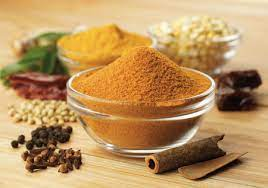

Curry
Existen una infinidad de recetas de curry. El tamaño de la India y la enorme variedad de ingredientes que utilizan hacen que el número de variedades de curry crezca exponencialmente. Esta receta pretende ser un curry básico y relativamente neutro para que guste a todo el mundo. El protagonista en esta receta es claramente la salsa que nos da la enorme flexibilidad de ser utilizada tanto con aves, carne o pescado.
Ingredientes
- 4 Cucharadas de aceite vegetal
- 3 Cebollas grandes, picadas muy finas
- 5 Tomates pelados y picados
- 1/2 Cuchara de postre de jengibre en polvo
- 4 Dientes de ajo picados finos
- 2 Cucharadas de postre de cilantro en polvo
- 3/4 Cucharada de postre de comino en polvo
- 2 Cucharadas de postre de cúrcuma
- 3/4 Cucharada de postre de mezcla Garam Masala
- 2 Cucharada de postre de pimentón dulce (sin ahumar)
- Sal y azúcar al gusto

Preparación
- Calentamos el aceite en una sartén grande, añadimos la cebolla y sofreímos unos 20 minutos hasta que quede bien dorada.
- Añadir el ajo y el jengibre y freír otro minuto.
- Añadir el resto de las especias y saltear unos segundos (No dejar quemar).
- Añadir 200ml de agua y el tomate con un poco de azúcar y dejar que hierva 15 minutos. Luego, salar al gusto.
- Combinar con carne de nuestra elección, dorada prevuamente en una sartén con aceite, cociéndolas en cazuela tapada en la salsa durante el tiempo correspondiente.
- También podemos añadir verduras cortadas y previamente salteadas
- Añadir el agua necesaria para que siempre quede una consistencia espesa de la salsa.